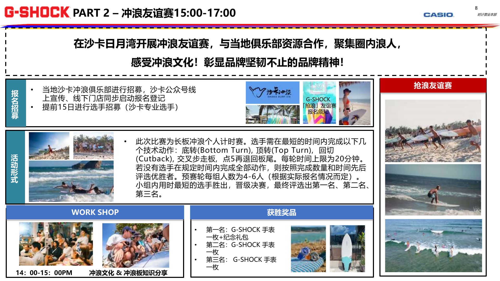
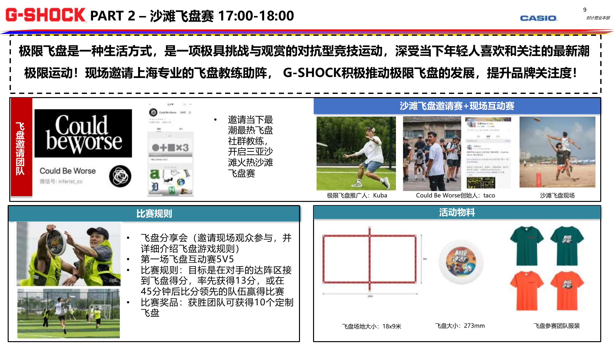
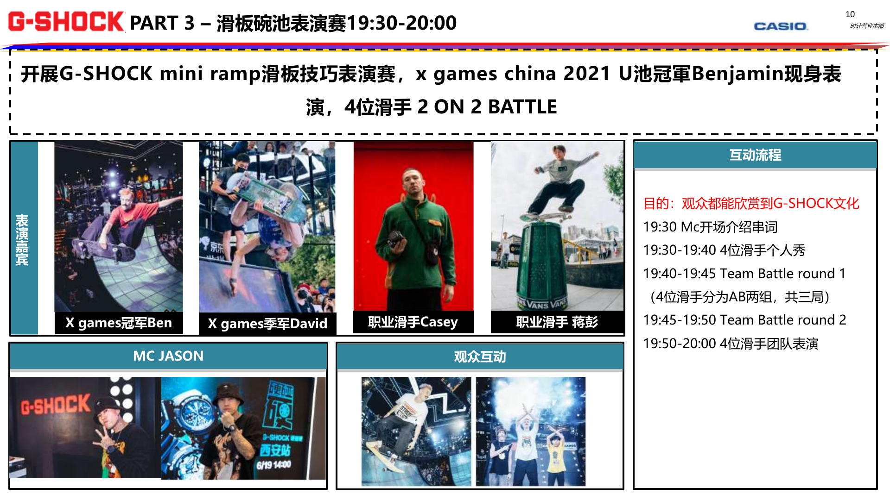
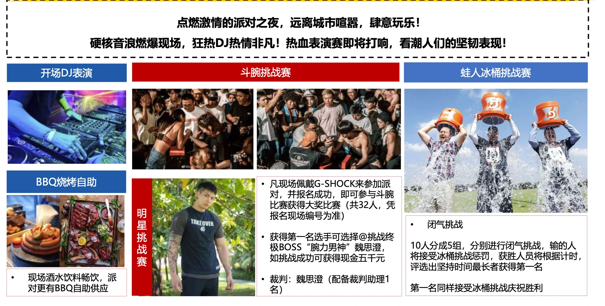
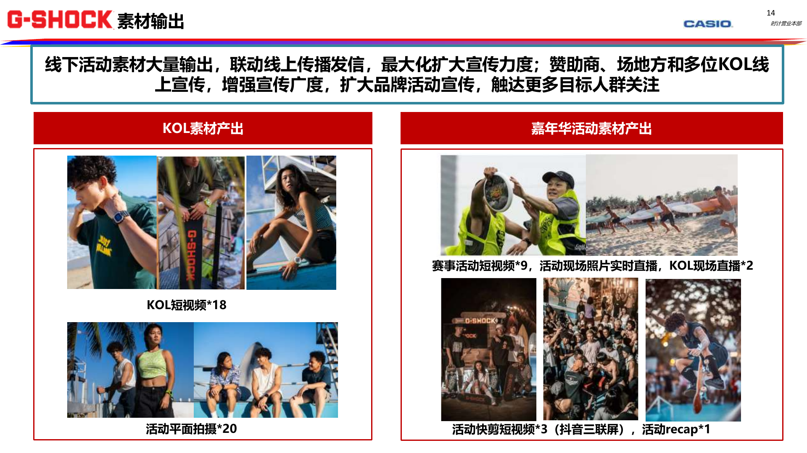
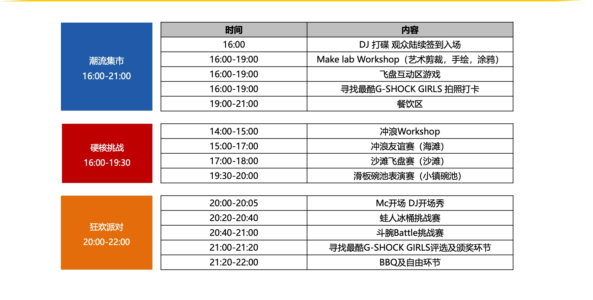

01 / Lifestyle Brand & Social Activation
01 / 生活方式品牌与社群激活
Extended Case · Long-term client relationship
延展案例 · 长期客户服务
G-SHOCK
Connecting young communities through sport and street culture to develop social content for the brand.
以运动与街头文化连接年轻社群，延展品牌的社交内容。

Project Type
项目类型
Long-term client relationship spanning social operations, campaign planning and event activation.
覆盖社媒运营、活动策划与线下激活的长期客户服务。
My Role
我的角色
I managed social media and campaign planning across a long-term client relationship. For the featured Beach Carnival proposal, I connected sport-community participation with event experiences and social content.
长期负责社媒运营与活动策划；在所展示的沙滩嘉年华方案中，串联运动社群、现场参与及社交传播内容。
Skills Demonstrated
核心能力
Community activation, campaign mechanics, on-site experience design and content amplification.
社群激活、活动机制、现场体验设计与内容扩散。
Selected Campaign · 2021 Beach Carnival
精选活动案例 · 2021 制燥浪潮
One campaign within my broader G-SHOCK account experience. This 2021 proposal connects surf, frisbee and skate communities with social content. Click any page to enlarge.
以下展示长期客户服务中的一个活动案例：2021 年「制燥浪潮」沙滩嘉年华。以冲浪、飞盘与滑板连接运动社群，并将现场体验延伸为社交传播内容。点击方案页可放大。






Original proposal evidence. Guest line-ups and content quantities shown are planning details, not verified delivery or campaign results.
原始方案展示；图中的嘉宾配置与素材数量为策划内容，不作为实际执行或传播成果。